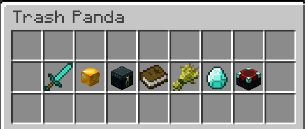

|  |
| The NPC menus as they appear in the Trash Panda GUI. |
NPCs, short for "non-player characters," are characters scattered around The Pit that serve assorted purposes.
Most NPCs offer trades and upgrades, but some have more miscellaneous purposes.
The list of NPCs is as follows:
| Location | Name | Location | Description |
| Spawn | Items (Non-Permanent) | Spawn – South | Allows the player to access the Item Shop. |
| Upgrades (Permanent) | Spawn – South | Allows the player to access the Upgrades Shop, containing perks, passives, killstreaks, and megastreaks. | |
| Quest Master | Spawn – East | Allows the player to access quests and contracts. | |
| Stats | Spawn – East | Allows the player to view their statistics. | |
| Prestige | Spawn – North | Allows the player to prestige and access the renown shop. | |
| The Keeper | Spawn – West | Allows the player return to the Hypixel Main Lobby without using commands. | |
| Leaderboard Picker (rabbit) | Spawn – East | Allows the player to change the currently displayed leaderboard. | |
| Castle map exclusive | The King | Port – (−110, 79, −6) | Allows the player to start and complete the King's Quest. |
| Baker | Location varies | Allows the player to turn in materials to receive a Mini Cake. | |
| Sewerfish | Sewers – Location varies | Accepts 64 Sewer Rubbish in exchange for Fresh Sewer Pants. | |
| Hay (salesman) | City – (50, 68, 91) | Removes all Packaged Bale from your inventory, giving 16 gold per bale removed. | |
| Bread (salesman) | City – (89, 66, 56) | Removes all Yummy Bread from your inventory, giving 24 gold per loaf removed. | |
| Fish (salesman) | City – (33, 66, 61) | Removes all types of fish from your inventory, giving 1 gold per fish removed. | |
| Genesis map exclusive | Angel | Spawn – South (−12, 86, 18) | Allows the player to access the Angel faction menu. |
| Demon | Spawn – North (12, 86, −17) | Allows the player to access the Demon faction menu. |
The possible locations of the Baker are as follows: